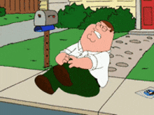
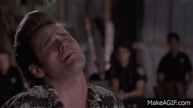
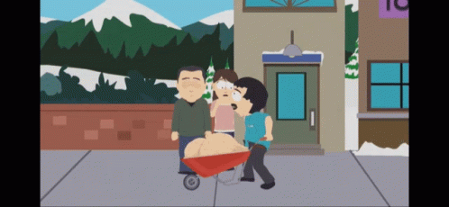
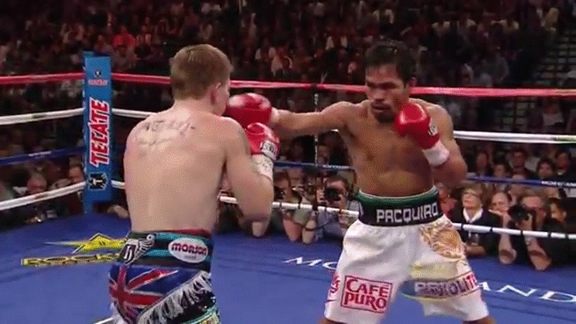
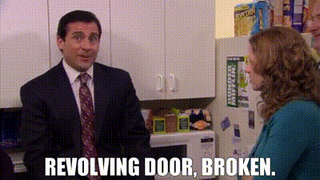
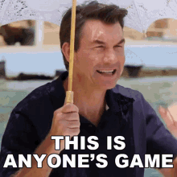

Published every Tuesday because Monday you're all still crying
Straight from the league's own standings page — AFC and NFC divisions, with playoff odds attached
| Rk | AFC | Record | Playoff % |
|---|---|---|---|
| 1 | Covfefe is for Closers | 2-1-0 | 83% |
| 2 | MaHOMELANDER | 2-1-0 | 83% |
| 3 | Nabers ate my Zombies | 2-1-0 | 57% |
| 4 | Hurt Me Moore | 1-2-0 | 59% |
| 5 | Waddle On Deez Nuts | 1-2-0 | 50% |
| Rk | NFC | Record | Playoff % |
|---|---|---|---|
| 1 | Kenz VishusLicks | 2-1-0 | 65% |
| 2 | Texas Determined Domination | 2-1-0 | 57% |
| 3 | Donuts All Day 24/7 | 1-2-0 | 47% |
| 4 | Sutton My Face | 1-2-0 | 55% |
| 5 | Catchy Football Name | 1-2-0 | 45% |
Five teams at 2-1, five at 1-2 — the tightest the league's been all season. Hurt Me Moore's playoff odds (59%) are still better than their record suggests, a reminder of just how loaded their schedule has been.
| Team | PF | PA | Streak | Moves |
|---|---|---|---|---|
| Covfefe is for Closers | 865.0 | 807.4 | W1 | 4 |
| Kenz VishusLicks | 692.8 | 698.0 | W2 | 4 |
| MaHOMELANDER | 833.0 | 763.7 | L1 | 1 |
| Nabers ate my Zombies | 721.7 | 673.1 | W1 | 2 |
| Texas Determined Domination | 648.5 | 676.9 | W1 | 7 |
| Hurt Me Moore | 795.0 | 772.9 | L1 | 9 |
| Waddle On Deez Nuts | 710.1 | 765.5 | W1 | 1 |
| Donuts All Day 24/7 | 655.9 | 696.0 | L1 | 2 |
| Sutton My Face | 633.8 | 599.8 | L1 | 10 |
| Catchy Football Name | 596.0 | 698.4 | L2 | 2 |
Sutton My Face has made 10 waiver moves already — far and away the most in the league — and is still sitting 1-2 with the second-lowest PF. Hurt Me Moore isn't far behind at 9 moves. Whatever either of them is doing, it isn't working yet.
Four blowouts and one nail-biter
Three of McCarty's guys went off — Drake London (34.4), Brock Bowers (35.6), Garrett Wilson (33.95) — and it didn't matter, because the two players projected to lead the team combined for 19 points on a 63-point projection: Drake Maye put up 12.8 and Justin Jefferson managed a brutal 6.2. JJ's side didn't need to be great, just competent — Jahmyr Gibbs (53.9) and a newly-added Kirk Cousins (44.35) made sure of that. JJ's now swapped QBs three times this season and the latest combo (Jordan Love + Kirk Cousins) is clicking.
This is becoming a monthly tradition: Tyler Shough went for 52.05 points at OP, his third enormous week in a row, and Jaxon Smith-Njigba added 44.65 on top. 318.85 is the highest score anyone's posted all season. Kevin's side wasn't bad — Brock Purdy (55.6!) carried hard — but Jonathan Taylor, Ashton Jeanty, and Bucky Irving all busted at once, and a 273-point week still wasn't enough against David's current ceiling.
Remember Sam Darnold's 0.7-point disaster that got him cut by Sutton My Face weeks ago? Kolby picked him up, and he just dropped 60.25 points — the single best score by any player this week. His 3.2-point line from De'Von Achane wasn't a bust, though — Achane tore his ACL in Miami's Week 3 game and is done for the season, a real loss that's going to need a real roster fix going forward. Alby's side just came up short everywhere without any one disaster to point to, and left 33.65 points on the bench from Michael Wilson while starting a worse option in his place.

Courtland Sutton busted for the third straight week (10.85 points) on the team literally named after him, and Omarion Hampton and Chase Brown both missed badly too — Ryan left 25.75 points unused on the bench from Kalif Raymond while it happened. Ken's Matthew Stafford keeps rewriting his own reputation, dropping 47.8 points, with a 27-point Jaguars D/ST game sealing it.

The closest margin of the week. Bijan Robinson went for 55.05 points for Joydip, but Jalen Hurts, Amon-Ra St. Brown, and a shaky Packers D/ST all came up short around him, and 27.8 points sat unused on the bench from Juwan Johnson. Lucas finally got some help around Jaylen Waddle's continued struggles (9.4 again) — George Kittle (30.95) and the Broncos D/ST (27.0) both blew way past their projections to get Waddle On Deez Nuts back to .500 on the week.

Pulled straight from the league API — exact projections, no screenshot guesswork
Projected: 245.95 – 258.19
JJ's Jordan Love/Kirk Cousins pairing (33.40 + 32.27 proj) is legit, but David's walking in with the highest overall points scored so far and a Trevor Lawrence/Tyler Shough combo (37.09 + 38.80 proj) that's been (almost) unstoppable for three weeks running. Covfefe's favored, and after what they just did to MaHOMELANDER, there's no reason to doubt it yet.

Projected: 241.62 – 233.1
Ryan's OP spot has turned into a revolving door: C.J. Stroud got cut for Caleb Williams on Sept 30, and Caleb Williams got cut for Michael Penix Jr. (31.58 proj) the very next day — three different quarterbacks in roughly 24 hours. Alby's side has its own headline: Justin Herbert is gone, dropped for Jacoby Brissett (34.86 proj) in a move nobody's fully explained yet. Both teams are 1-2, and both just gutted their own quarterback rooms days before kickoff.

Projected: 229.76 – 223.16
Kolby didn't wait around after De'Von Achane's ACL tear — Achane's dropped, Jaylen Wright is in at a $15 FAAB bid, and Xavier Worthy was added too ($10) days later. Two season-ending injuries in three weeks (Achane and Jaxson Dart) and the roster's already restocked. Sam Darnold (33.84 proj) keeps the OP spot after a 60-point explosion last week. Lucas brings the best QB pairing in this matchup — Lamar Jackson and Dak Prescott (40.27 + 36.64 proj) — but Jackson's questionable heading in, worth a lineup check before Thursday.

Projected: 233.64 – 221.95
McCarty's moved on from the Jayden Daniels injury with Kyler Murray (38.85 proj, questionable status on Justin Jefferson worth watching) — Daniels himself doesn't need surgery and is expected back within three weeks, but that's Washington's problem for now. Ken's riding Matthew Stafford (35.67 proj) and Bryce Young (40.90 proj) after two huge weeks in a row. Projected close, with Catchy as a slight favorite for the first time in a while.
Projected: 280.84 – 258.06
The highest projection of the week belongs to Kevin — Brock Purdy (38.55 proj) and Patrick Mahomes (37.99 proj) combine for over 76 points on paper. A.J. Brown remains on IR, which hasn't stopped this roster yet. Joydip's coming off the league's closest loss and brings Jalen Hurts and Jared Goff (35.97 + 37.87 proj) back for another run, but the gap on paper is real this week. Expect MaHOMELANDER to roll.